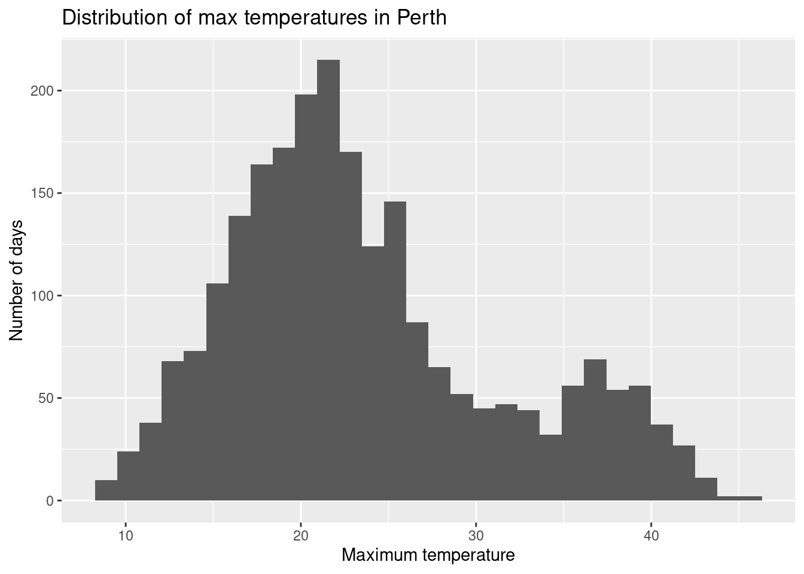

# Load package
library(tidyverse)
# Read in the Dear Abby data
abby <- read_csv("https://mac-stat.github.io/data/dear_abby.csv")Univariate visualization and summaries
Notes
Learning goals
By the end of this lesson, you should be able to:
- Describe what a case (or unit of analysis) represents in a dataset.
- Describe what a variable represents in a dataset.
- Identify whether a variable is categorical or quantitative and what summarizations and visualizations are appropriate for that variable
- Write R code to read in data and to summarize and visualize a single variable at a time.
- Interpret key features of barplots, boxplots, histograms, and density plots
- Describe information about the distribution of a quantitative variable using the concepts of shape, center, spread, and outliers
- Relate summary statistics of data to the concepts of shape, center, spread, and outliers
Readings and videos
Choose either the reading or the videos to go through before class.
- Reading: Sections 2.1-2.4, 2.6 in the STAT 155 Notes
- Videos:
File organization: Save this file in the “Activities” subfolder of your “STAT155” folder.
Exercises
Guiding question: What anxieties have been on Americans’ minds over the decades?
Context: Dear Abby is America’s longest running advice column. Started in 1956 by Pauline Phillips under the pseudonym Abigail van Buren, the column continues to this day under the stewardship of her daughter Jeanne. Each column features one or more letters to Abby from anonymous individuals, all signed with a pseudonym. Abby’s response follows each letter.
In 2018, the data journalism site The Pudding published a visual article called 30 Years of American Anxieties in which the authors explored themes in Dear Abby letters from 1985 to 2017. (We only have the questions, not Abby’s responses.) The codebook is available here.
Exercise 1: Get curious
- Hypothesize with each other: what themes do you think might come up often in Dear Abby letters?
- After brainstorming, take a quick glance at the original article from The Pudding to see what themes they explored.
- Go to the very end of the Pudding article to the section titled “Data and Method”. In thinking about the who, what, when, where, why, and how of data context, what concerns/limitations surface with regards to using this data to learn about Americans’ concerns over the decades?
Exercise 2: Importing and getting to know the data
First, in the Console pane of RStudio, run the following command to install some necessary packages (you will need to do this any time you are installing a new package):
install.packages("tidyverse")Now, in the Quarto pane, run the following code chunk to load the package and load a dataset (you can either click the green arrow in the top right of the code chunk, put your cursor in the code chunk and hit Ctrl+Alt+C [on Windows/Linux] or Command+Option+C [on Mac]).
If it runs successfully, you should see the following output appear in the Console pane:
> # Load package
> library(tidyverse)
>
> # Read in the course evaluation data
> abby <- read_csv("https://mac-stat.github.io/data/dear_abby.csv")
Rows: 20034 Columns: 11
── Column specification ────────────────────────────
Delimiter: ","
chr (4): day, url, title, question_only
dbl (7): year, month, letterId, afinn_overall, a...
ℹ Use `spec()` to retrieve the full column specification for this data.
ℹ Specify the column types or set `show_col_types = FALSE` to quiet this message.Throughout this activity, we’ll work only with the most recent year of data, from 2017. Run the following chunk:
# Wrangle the Dear Abby data
# Ignore this code for now!
abby <- abby %>%
filter(year == 2017) %>%
mutate(month = month(month, label = TRUE)) %>%
mutate(
parents = str_detect(question_only, "mother|mama|mom|father|papa|dad"),
marriage = str_detect(question_only, "marriage|marry|married"),
money = str_detect(question_only, "money|finance")
) %>%
rowwise() %>%
mutate(
themes = c(
if (parents) "parents",
if (marriage) "marriage",
if (money) "money"
) %>% paste(collapse = ", "),
themes = ifelse(themes == "", "other", themes)
) %>%
ungroup() %>%
select(year, month, day, question_only, bing_pos, afinn_overall, afinn_pos, afinn_neg, themes)Click on the Environment tab (generally in the upper right hand pane in RStudio). Then click the
abbyline. Theabbydata will pop up as a separate pane (like viewing a spreadsheet) – check it out.In this tidy dataset, what is the unit of observation? That is, what is represented in each row of the dataset?
What term do we use for the columns of the dataset?
Try out each function below. Identify what each function tells you about the
abbydata and note this in the???:
# ??? [what do both numbers mean?]
dim(abby)# ???
nrow(abby)# ???
ncol(abby)# ???
head(abby)# ???
names(abby)- [OPTIONAL] If you’re not sure how exactly to use a function, you can pull up a built-in help page with information about the arguments a function takes (i.e., what goes inside the parentheses), and the output it produces. To do this, click inside the Console pane, and enter
?function_name. For example, to pull up a help page for thedim()function, we can type?dimand hit Enter. Try pulling up the help page for theread_csv()function we used to load the dataset.
Exercise 3: Preparing to summarize and visualize the data
In the next exercises, we will be exploring themes in the Dear Abby questions and the overall “mood” or sentiment of the questions. Before continuing, read the codebook for this dataset for some context about sentiment analysis, which gives us a measure of the mood/sentiment of a text.
What sentiment variables do we have in the dataset? Are they quantitative or categorical?
Check out the
themevariable. Is this quantitative or categorical?What visualizations are appropriate for looking at the distribution of a single quantitative variable? What about a single categorical variable?
Exercise 4: Exploring themes in the letters
- The code below makes a barplot of the
themesvariable using theggplot2visualization package. Before making the plot, make note of what you expect the plot might look like. (This might be hard–just do your best!) Then compare to what you observe when you run the code chunk to make the plot. (Clearly defining your expectations first is good scientific practice to avoid confirmation bias.)
# Load package
library(ggplot2)
# barplot
ggplot(abby, aes(x = themes)) +
geom_bar() +
theme(axis.text.x = element_text(angle = 90, vjust = 0.5, hjust=1))- We can follow up on the barplot with a simple numerical summary. Whereas the
ggplot2package is great for visualizations,dplyris great for numerical summaries. The code below constructs a table of the number of questions with each theme. Make sure that these numerical summaries match up with what you saw in the barplot.
# Construct a table of counts
abby %>%
count(themes)- Before proceeding, let’s break down the plotting code above. Run each chunk to see how the two lines of code above build up the plot in “layers”. Add comments (on the lines starting with
#) to document what you notice.
# ???
ggplot(abby, aes(x = themes))# ???
ggplot(abby, aes(x = themes)) +
geom_bar()# ???
ggplot(abby, aes(x = themes)) +
geom_bar() +
theme(axis.text.x = element_text(angle = 90, vjust = 0.5, hjust=1))# ???
ggplot(abby, aes(x = themes)) +
geom_bar() +
theme_classic() +
theme(axis.text.x = element_text(angle = 90, vjust = 0.5, hjust=1))Exercise 5: Exploring sentiment
We’ll look at the distribution of the bing_pos sentiment variable and associated summary statistics.
- The code below creates a boxplot of this variable. In the comment, make note of how this code is similar to the code for the barplot above. As in the previous exercise, before running the code chunk to create the plot, make note of what you expect the boxplot to look like.
# ???
ggplot(abby, aes(x = bing_pos)) +
geom_boxplot()- Challenge: Using the code for the barplot and boxplot as a guide, try to make a histogram and a density plot of the overall average ratings.
- What information is given by the tallest bar of the histogram?
- How would you describe the shape of the distribution?
# Histogram
# Density plot- We can compute summary statistics (numerical summaries) for a quantitative variable using the
summary()function or with thesummarize()function from thedplyrpackage. (1st Qu.and3rd Qu.stand for first and third quartile.) After inspecting these summaries, look back to your boxplot, histogram, and density plot. Which plots show which summaries most clearly?
# Summary statistics
# Using summary() - convenient for computing many summaries in one command
# Does not show the standard deviation
abby %>%
select(bing_pos) %>%
summary()
# Using summarize() from dplyr
# Note that we use %>% to pipe the data into the summarize() function
# We need to use na.rm = TRUE because there are missing values (NAs)
abby %>%
summarize(mean(bing_pos, na.rm = TRUE), median(bing_pos, na.rm = TRUE), sd(bing_pos, na.rm = TRUE))- Write a good paragraph describing the information in the histogram (or density plot) by discussing shape, center, spread, and outliers. Incorporate the numerical summaries from part c.
Pause: Math box
Below is an example of a “math box” which summarizes the formulas for some of the numerical summaries above. You are not required to memorize, nor will you be assessed on, any formulas presented in this or any future math box. They serve 3 purposes:
- To emphasize that there’s “math” / a formal structure behind what we’re doing.
- To provide students that plan to continue studying Statistics a glimpse into the formal statistical theory they’ll explore in later courses.
- To make happy the students that are simply interested in math!
::: {.callout-note title = “MATH BOX: Univariate numerical summaries”}
Let \((y_1, y_2, ..., y_n)\) be a sample of \(n\) data points.
mean: \[\overline{y} = \frac{y_1 + y_2 + \cdots + y_n}{n} = \frac{\sum_{i=1}^n y_i}{n}\]
variance: \[\text{var}(y) = \frac{(y_1 - \overline{y})^2 + (y_2 - \overline{y})^2 + \cdots + (y_n - \overline{y})^2}{n - 1} = \frac{\sum_{i=1}^n (y_i - \overline{y})^2}{n - 1}\]
standard deviation: \[\text{sd}(y) = \sqrt{\text{var}(y)}\] :::
Exercise 6: Box plots vs. histograms vs. density plots
We took 3 different approaches to plotting the quantitative average course variable above. They all have pros and cons.
- What is one pro about the boxplot in comparison to the histogram and density plot?
- What is one con about the boxplot in comparison to the histogram and density plots?
- In this example, which plot do you prefer and why?
Exercise 7: Returning to our context, looking ahead
In this activity, we explored data on Dear Abby question, with a focus on exploring a single variable at a time.
- In big picture terms, what have we learned about Dear Abby questions?
- What further curiosities do you have about the data?
Exercise 8: Different ways to think about data visualization
In working with and visualizing data, it’s important to keep in mind what a data point represents. It can reflect the experience of a real person. It might reflect the sentiment in a piece of art. It might reflect history. We’ve taken one very narrow and technical approach to data visualization. Check out the following examples, and write some notes about anything you find interesting.
Exercise 9: Rendering your work
Save this file, and then click the “Render” button in the menu bar for this pane (blue arrow pointing right). This will create an HTML file containing all of the directions, code, and responses from this activity. A preview of the HTML will appear in the browser.
- Scroll through and inspect the document to see how your work was translated into this HTML format. Neat!
- Close the browser tab.
- Go to the “Background Jobs” pane in RStudio and click the Stop button to end the rendering process.
- Navigate to your “Activities” subfolder within your “STAT155” folder and locate the HTML file. You can open it again in your browser to double check.
Reflection
Go to the top of this file and review the learning objectives for this lesson. Which objectives do you have a good handle on, are at least familiar with, or are struggling with? What feels challenging right now? What are some wins from the day?
Response: Put your response here.
Advice: make an R code “cheat sheet”!
You will continue to pick up new R code and ideas. You’re highly encouraged to start tracking this in a cheat sheet (eg: in a Google doc). The cheat sheet will be a handy reference for you, and the act of making it will help deepen your understanding and retention.
Additional Practice
If you have time and want additional practice, try out the following exercises.
Exercise 10: Read in and get to know the weather data
Daily weather data are available for 3 locations in Perth, Australia.
- View the codebook here.
- Complete the code below to read in the data.
# Replace the ??? with your own name for the weather data
# Replace the ___ with the correct function
??? <- ___("https://mac-stat.github.io/data/weather_3_locations.csv")Exercise 11: Exploring the data structure
Check out the basic features of the weather data.
# Examine the first six cases
# Find the dimensions of the dataWhat does a case represent in this data?
Exercise 12: Exploring rainfall
The raintoday variable contains information about rainfall.
- Is this variable quantitative or categorical?
- Create an appropriate visualization, and compute appropriate numerical summaries.
- What do you learn about rainfall in Perth?
# Visualization
# Numerical summariesExercise 13: Exploring temperature
The maxtemp variable contains information on the daily high temperature.
- Is this variable quantitative or categorical?
- Create an appropriate visualization, and compute appropriate numerical summaries.
- What do you learn about high temperatures in Perth?
# Visualization
# Numerical summariesExercise 14: Customizing! (CHALLENGE)
Though you will naturally absorb some RStudio code throughout the semester, being an effective statistical thinker and “programmer” does not require that we memorize all code. That would be impossible! In contrast, using the foundation you built today, do some digging online to learn how to customize your visualizations.
- For the histogram below, add a title and more meaningful axis labels. Specifically, title the plot “Distribution of max temperatures in Perth”, change the x-axis label to “Maximum temperature” and y-axis label to “Number of days”. HINT: Do a Google search for something like “add axis labels ggplot”.
# Add a title and axis labels
ggplot(weather, aes(x = maxtemp)) +
geom_histogram()- Adjust the code below in order to color the bars green. NOTE: Color can be an effective tool, but here it is simply gratuitous.
# Make the bars green
ggplot(weather, aes(x = raintoday)) +
geom_bar()Check out the
ggplot2cheat sheet. Try making some of the other kinds of univariate plots outlined there.What else would you like to change about your plot? Try it!
Exercise 15: Optional challenge
At the top of this activity, we searched for words related to some topics of interest (parents, marriage, money) and combined them into a single theme variable. It looked something like this:
abby_new <- abby %>%
mutate(
parents = str_detect(question_only, "mother|mama|mom|father|papa|dad"),
marriage = str_detect(question_only, "marriage|marry|married"),
money = str_detect(question_only, "money|finance")
) %>%
rowwise() %>%
mutate(
themes = c(
if (parents) "parents",
if (marriage) "marriage",
if (money) "money"
) %>% paste(collapse = ", "),
themes = ifelse(themes == "", "other", themes)
) %>%
ungroup()Check it out:
head(abby_new)- Understand the code!
Inside
mutate()the lineparents = str_detect(question_only, "mother|mama|mom|father|papa|dad")created a new variable calledparents. This variable takes onTRUEorFALSE. Explain whatTRUEandFALSEmean here.The
themesvariable combines the information from theparents,marriage, andmoneyvariables. Check out thethemesfor the first 3 rows / data points. Convince yourself that you understand how it corresponds to theparents,marriage, andmoneyvariables.
- Beyond
parents,marriage, andmoney, what are some other topics that might pop up in the Dear Abby letters (and that you’re interested in exploring)? Modify the code below to explore those topics! Update thethemesvariable accordingly.
abby_new <- abby %>%
mutate(
parents = str_detect(question_only, "mother|mama|mom|father|papa|dad"),
marriage = str_detect(question_only, "marriage|marry|married"),
money = str_detect(question_only, "money|finance")
) %>%
rowwise() %>%
mutate(
themes = c(
if (parents) "parents",
if (marriage) "marriage",
if (money) "money"
) %>% paste(collapse = ", "),
themes = ifelse(themes == "", "other", themes)
) %>%
ungroup()
# Check out the raw data
head(abby_new)
# Check out the number of letters belonging to each theme
abby_new %>%
count(themes)
Solutions
Exercise 1: Get curious
- Results of brainstorming themes will vary
- From the “Data and Method” section at the end of the Pudding article, we see this paragraph:
The writers of these questions likely skew roughly 2/3 female (according to Pauline Phillips, who mentions the demographics of responses to a survey she disseminated in 1987), and consequently, their interests are overrepresented; we’ve been unable to find other demographic data surrounding their origins. There is, doubtless, a level of editorializing here: only a fraction of the questions that people have written in have seen publication, because agony aunts (the writers of advice columns) must selectively filter what gets published. Nevertheless, the concerns of the day seem to be represented, such as the HIV/AIDS crisis in the 1980s. Additionally, we believe that the large sample of questions in our corpus (20,000+) that have appeared over recent decades gives a sufficient directional sense of broad trends.
- Writers of the questions are predominately female. The 2/3 proportion was estimated in 1987, so it would be useful to understand shifts in demographics over time.
- What questions were chosen to be answered on the column? Likely a small fraction of what got submitted. What themes tended to get cut out?
Exercise 2: Importing and getting to know the data
Note how clicking the
abbydata causes both a popup pane and the commandView(abby)to appear in the Console. In fact, theView()function is the underlying command that opens a dataset pane. (View()should always be entered in the Console and NOT your Quarto document.)Each row / case corresponds to a single question.
Columns = variables
Try out each function below. Identify what each function tells you about the
abbydata and note this in the???:
# First number = number of rows / cases
# Second number = number of columns / variables
dim(abby)
## [1] 514 6
# Number of rows (cases)
nrow(abby)
## [1] 514
# Number of columns (variables)
ncol(abby)
## [1] 6
# View first few rows of the dataset (6 rows, by default)
head(abby)
## # A tibble: 6 × 6
## year month day question_only bing_pos themes
## <dbl> <ord> <chr> <chr> <dbl> <chr>
## 1 2017 Aug 30 "i moved to the philippines five years ago.… 0.75 paren…
## 2 2017 Aug 30 "under what circumstances do you ask your a… NA money
## 3 2017 Aug 28 "i'm not a dog person. i'm not even an anim… 0.333 other
## 4 2017 Aug 28 "my 62-year-old father has recently started… 0.143 paren…
## 5 2017 Aug 27 "i have a friend, \"charlene,\" whom i met … 0.222 other
## 6 2017 Aug 27 "i have been selected to attend a symposium… 0.333 other
# Get all column (variable) names
names(abby)
## [1] "year" "month" "day" "question_only"
## [5] "bing_pos" "themes"- We can display the first 10 rows with
head(abby, n = 10).
Exercise 3: Preparing to summarize and visualize the data
The sentiment variables are
afinn_overall,afinn_pos,afinn_neg, andbing_pos, and they are quantitative. Theafinnvariables don’t have units but we can still get a sense of the scale by remembering that each word gets a score between -5 and 5. Thebing_posvariable doesn’t have units because it’s a fraction, but we know that it ranges from 0 to 1.categorical
Appropriate visualizations:
- single quantitative variable: boxplot, histogram, density plot
- single categorical variable: barplot
Exercise 4: Exploring themes in the letters
- Expectations about the plot will vary
ggplot(abby, aes(x = themes)) +
geom_bar() +
theme(axis.text.x = element_text(angle = 90, vjust = 0.5, hjust=1))
- Counts in the table below match the barplot
# Construct a table of counts
abby %>%
count(themes)
## # A tibble: 8 × 2
## themes n
## <chr> <int>
## 1 marriage 75
## 2 marriage, money 5
## 3 money 21
## 4 other 234
## 5 parents 127
## 6 parents, marriage 33
## 7 parents, marriage, money 4
## 8 parents, money 15- What do the plot layers do?
# Just sets up the "canvas" of the plot with axis labels
ggplot(abby, aes(x = themes))# Adds the bars
ggplot(abby, aes(x = themes)) +
geom_bar()# Rotates the x axis labels
ggplot(abby, aes(x = themes)) +
geom_bar() +
theme(axis.text.x = element_text(angle = 90, vjust = 0.5, hjust=1))# Changes the visual theme of the plot with a white background and removes gridlines
ggplot(abby, aes(x = themes)) +
geom_bar() +
theme_classic() +
theme(axis.text.x = element_text(angle = 90, vjust = 0.5, hjust=1))Exercise 5: Exploring sentiment
- We might expect the mean of this variable is less than zero given that more negative words might be appear in questions on an advice column.
- The code has a similar structure to the barplot in that there is an initial
ggplot()layer which sets the canvas, then a+to add a layer, then the final layergeom_boxplot()(likegeom_bar()) which tells R what type of plot to make.
ggplot(abby, aes(x = afinn_overall)) +
geom_boxplot()
## Error in `geom_boxplot()`:
## ! Problem while computing aesthetics.
## ℹ Error occurred in the 1st layer.
## Caused by error:
## ! object 'afinn_overall' not found- We replace
geom_boxplot()withgeom_histogram()andgeom_density().- The tallest bar of the histogram indicates that over 7500 questions had an overall
afinnsentiment score between around -8 to 0.(The -8 to 0 comes from eyeballing where the tallest bar is placed on the x-axis, and the height of this bar indicates how many cases fall into that bin.) - The shape of the distribution: roughly symmetric
- The tallest bar of the histogram indicates that over 7500 questions had an overall
# Histogram
ggplot(abby, aes(x = afinn_overall)) +
geom_histogram()
## Error in `geom_histogram()`:
## ! Problem while computing aesthetics.
## ℹ Error occurred in the 1st layer.
## Caused by error:
## ! object 'afinn_overall' not found
# Density plot
ggplot(abby, aes(x = afinn_overall)) +
geom_density()
## Error in `geom_density()`:
## ! Problem while computing aesthetics.
## ℹ Error occurred in the 1st layer.
## Caused by error:
## ! object 'afinn_overall' not found- Boxplot shows min, max, median, 1st and 3rd quartile easily. (It shows median, 1st and 3rd quartile directly as lines)
- Histogram and density plot show min and max but the mean and median aren’t shown directly–we have to roughly guess based on the peak of the distribution
# Summary statistics
summary(abby$afinn_overall)
## Length Class Mode
## 0 NULL NULL
abby %>%
summarize(mean(afinn_overall, na.rm = TRUE), median(afinn_overall, na.rm = TRUE), sd(afinn_overall, na.rm = TRUE))
## Error in `summarize()`:
## ℹ In argument: `mean(afinn_overall, na.rm = TRUE)`.
## Caused by error:
## ! object 'afinn_overall' not found- The distribution of sentiment scores is roughly symmetric with a mean of -1.4 and a similar median of -1. The median and mean are quite similar because the distribution is fairly symmetric. The standard deviation of the sentiment scores is about 11.08 which tells us how much variation there is from the center of the distribution. 11.08 is somewhat high given the IQR of -6 to 3 (which is a span of 9 units).
Exercise 6: Box plots vs. histograms vs. density plots
- Boxplots very clearly show key summary statistics like median, 1st and 3rd quartile
- Boxplots can oversimplify by not showing the shape of the distribution.
Exercise 7: Returning to our context, looking ahead
- Answers will vary
Exercise 10: Read in and get to know the weather data
weather <- read_csv("https://raw.githubusercontent.com/Mac-STAT/data/main/weather_3_locations.csv")Exercise 11: Exploring the data structure
Check out the basic features of the weather data.
# Examine the first six cases
head(weather)
## # A tibble: 6 × 24
## date location mintemp maxtemp rainfall evaporation sunshine windgustdir
## <date> <chr> <dbl> <dbl> <dbl> <dbl> <dbl> <chr>
## 1 2020-01-01 Wollongo… 17.1 23.1 0 NA NA SSW
## 2 2020-01-02 Wollongo… 17.7 24.2 0 NA NA SSW
## 3 2020-01-03 Wollongo… 19.7 26.8 0 NA NA NE
## 4 2020-01-04 Wollongo… 20.4 35.5 0 NA NA SSW
## 5 2020-01-05 Wollongo… 19.8 21.4 0 NA NA SSW
## 6 2020-01-06 Wollongo… 18.3 22.9 0 NA NA NE
## # ℹ 16 more variables: windgustspeed <dbl>, winddir9am <chr>, winddir3pm <chr>,
## # windspeed9am <dbl>, windspeed3pm <dbl>, humidity9am <dbl>,
## # humidity3pm <dbl>, pressure9am <dbl>, pressure3pm <dbl>, cloud9am <dbl>,
## # cloud3pm <dbl>, temp9am <dbl>, temp3pm <dbl>, raintoday <chr>,
## # risk_mm <dbl>, raintomorrow <chr>
# Find the dimensions of the data
dim(weather)
## [1] 2367 24A case represents a day of the year in a particular area (Hobart, Uluru, Wollongong as seen by the location variable).
Exercise 12: Exploring rainfall
The raintoday variable contains information about rainfall.
raintodayis categorical (No, Yes)- It is more common to have no rain.
# Visualization
ggplot(weather, aes(x = raintoday)) +
geom_bar()
# Numerical summaries
weather %>%
count(raintoday)
## # A tibble: 3 × 2
## raintoday n
## <chr> <int>
## 1 No 1864
## 2 Yes 446
## 3 <NA> 57Exercise 13: Exploring temperature
The maxtemp variable contains information on the daily high temperature.
maxtempis quantitative- The typical max temperature is around 23 degrees Celsius (with an average of 23.62 and a median of 22 degrees). The max temperatures ranged from 8.6 to 45.4 degrees. Finally, on the typical day, the max temp falls about 7.8 degrees from the mean. There are multiple modes in the distribution of max temperature—this likely reflects the different cities in the dataset.
# Visualization
ggplot(weather, aes(x = maxtemp)) +
geom_histogram()
# Numerical summaries
summary(weather$maxtemp)
## Min. 1st Qu. Median Mean 3rd Qu. Max. NA's
## 8.60 18.10 22.00 23.62 27.40 45.40 34
# There are missing values (NAs) in this variable, so we add
# the na.rm = TRUE argument
weather %>%
summarize(sd(maxtemp, na.rm = TRUE))
## # A tibble: 1 × 1
## `sd(maxtemp, na.rm = TRUE)`
## <dbl>
## 1 7.80Exercise 14: Customizing! (CHALLENGE)
ggplot(weather, aes(x = maxtemp)) +
geom_histogram() +
labs(x = "Maximum temperature", y = "Number of days", title = "Distribution of max temperatures in Perth")
# Make the bars green
ggplot(weather, aes(x = raintoday)) +
geom_bar(fill = "green")